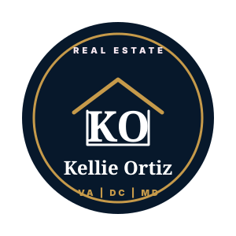

Option 1: Refined Wordmark
Best default for the website header and footer. Elegant, readable, and personal.
assets/brand/logos/kellie-ortiz-wordmark-reverse.svg
Brand Concepts
Four polished directions built as SVG assets, ready for the website header, footer, social graphics, print pieces, and future favicon work.
Best default for the website header and footer. Elegant, readable, and personal.
assets/brand/logos/kellie-ortiz-wordmark-reverse.svg
Same KO identity from Option 1, without the full Kellie Ortiz wordmark.
assets/brand/logos/kellie-ortiz-mark-reverse.svg
Same primary identity, tuned for white backgrounds and printed collateral.
assets/brand/logos/kellie-ortiz-wordmark.svg
A stronger real-estate cue, useful when the brand needs to feel more architectural.
assets/brand/logos/kellie-ortiz-monogram.svg
A modern, simple mark that works nicely for flyers, postcards, and listing sheets.
assets/brand/logos/kellie-ortiz-line-mark.svg

Useful for profile graphics, social posts, stickers, and square placements.
assets/brand/logos/kellie-ortiz-badge.svg